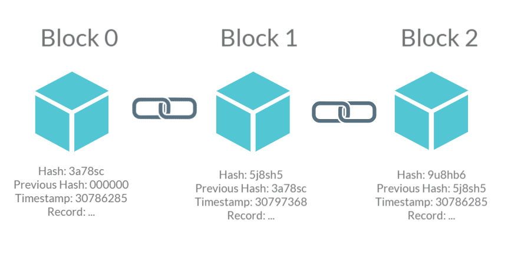
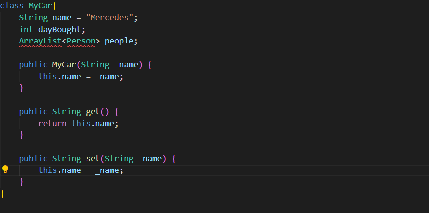
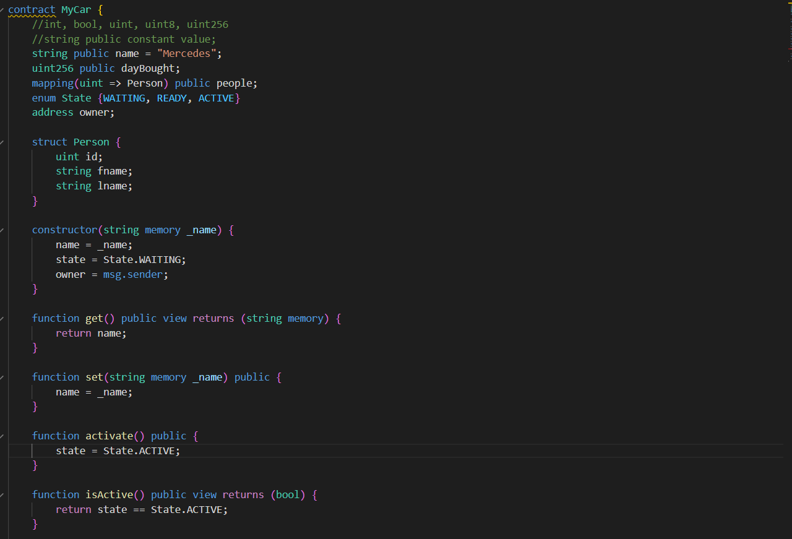

Author: Huy Hoang Pham
Have you ever heard about cryptocurrency? Or maybe something called NFT that used to take over the world with it innovative idea? Well, all of those ideas are inventions based on a new technology called blockchain. The idea behind it is to guaranteed ownership of a person's assets on the network, making it the most secure method to protect your assets online.
So, what does it have to do with Solidity? Well, Solidity is a programming language design mainly for the purpose of creating "Smart Contracts" for blockchain application. It allows us to control how we want to implement blockchain in our app to interact with users. But aren't that normal programming language like C++, Java, Python can also do that? And also, what are those "blockchain" and "Smart Contracts" were you talking about? Don't worry my friends, because all of it will be explain right below.
Blockchain has been hitting the world of technology in recent years as of it huge potential of a secure way for storing and transferring data on the internet. It provides a decentralized, transparent method to control information and data. To put it simple, a blockchain is a shared database of which all the computers in the same network knows what data was inserted or action has been performed on that database. This prevent the risk of needing just a single central authorize to control the data, which would potentially create vulnerabilities for the whole network.
So how does it work, and what makes it more secure than normal system? As the name itself, data in a blockchain system is divided into blocks that are chained to each other. Each block in the chain contains a unique hash to encode and decode the data, the hash of the previous block, a timestamp of when the block is created, and a record of transactions that has happened in that block. Think of it as almost the same as a linked list, each node have the key of the next node, but in this case, the key of the previous node. Why do we have to do this? As a chain, we don't want it to have any vulnerabilities in between the block, so doing this create a consistent of the system: Once a block has been added to the chain, it cannot be altered or deleted, providing a hash information of the previous block, making it strongly linked with each other.
Solidity is an object-oriented based, high-level programming language that is created by Gavin Wood - An English software developer. As I was mentioned above, it is use to design "Smart Contracts". These "Contracts" act as a set of instruction to control how the application work. Smart contracts are self-executing programs that automatically execute when certain conditions are met.
Solidity is a statically-typed language. This means thatvariables and functions must be explicitly defined before they are used, just like many other programming language. This of course makes Solidity more secure, as it prevents unexpected behavior from occuring due to undeclared variables or functions.
So it is an object-oriented programming (OOP) language, just like Java?. Well, Solidity was built based on the concept of object-oriented, but solely for the purpose of creating and designing "Smart Contracts", so it is kind of the same. It is easy to pick up if you already familiar with other OOP languages like Java. Below are some example of Solidity contract compare to Java class.
 Java Class  Solidity ContractAs you can see, there are some familiarities between Java class and Solidity contract. Both of it have attributes, functions, and constructors. The syntax maybe a bit different, but the concept is quite the same.
So, what is the different? Well, since Solidity need to be able to handle transactions on blockchain application, there are some features that are implemented for that. For example, you can see on the example above, there is an attribute called owner with the type of "address". This is what you will encounter quite a lot when working with Solidity, because essentially it is an attribute to track the network address of people who making transactions of assets (like cryptocurrency, nfts,etc...) on the blockchain. You will also encounter State a lot since to be able to track live actions of users on the application, you need to track the State of the transactions actively.
Another important feature of Solidity is its ability to interact with other contracts on the blockchain application. As I was mentioned, contract is an object use to control the work on the blockchain app. So being able to interact with other contracts allows for the creation of complex, decentralized applications that can automate various tasks and execute them without the need for a central authority.
So, what is the challenge for writing smart contracts in Solidity? The most important thing is security. Solidity work on the concept of blockchain technology, which means it works with other people real assets (cryptocurrency, nft, blockchain assets, etc...). If your smart contracts are not secure and have vulnerabilities, you can easily be attacked by hacker, and your contract will be exploit, potentially leading to the lost of users assets. Being said, Solidity has a number of built-in functions that can be used to prevent common vulnerabilities, such as integer overflow and reentrancy attacks.
As risky as it may sound, Solidity does have a lot to offer to prevent such a fatal security risk to happen. Smart contracts are immutable, which means that once they are deployed on the blockchain, their code cannot be changed. Solidity makes it easy to write complex smart contracts by providing a range of features, such as:
Above are some "safety features" that you could implements to protect your smart contracts with Solidity. Beside that, there are some concepts that Solidity pursue for the purpose of protecting contracts, such as:
That is some of the main feature of Solidity of being a "contract-based" programming language. Further on research, you will find out a lot more features that Solidity have to offer to help you with manipulating blockchain applications using "Smart Contracts".
Solidity is an important language for developing smart contracts on blockchain application. Offering security features, object-oriented design, and ability to interact with other contracts and the blockchain make it a powerful tool for creating and designing blockchain smart contracts. While there are still challenges to be overcome, Solidity is definitely the language of choice to learn for this new era of blockchain technology.